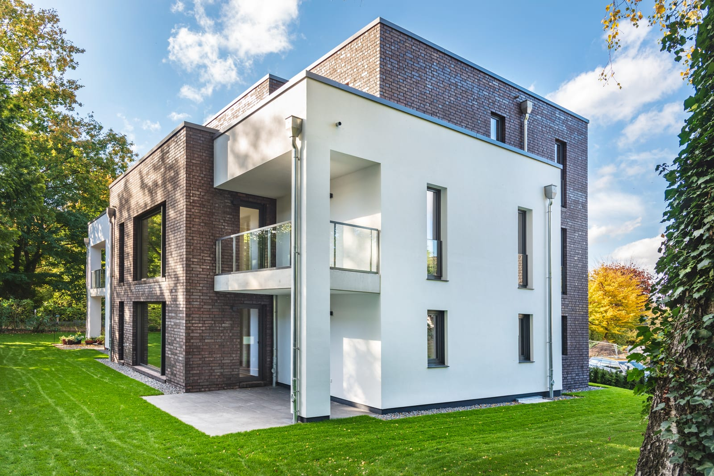

Referenz · Fertiggestellt & verkauft
SW 9
Sechs Wohneinheiten. Wohnen im Grünen.

Das Projekt
Klare Formen. Viel Licht.
Im Projekt SW 9 haben wir ein Mehrfamilienhaus mit sechs Wohneinheiten realisiert. Das Projekt ist fertiggestellt und verkauft. Dunkler Klinker und helle Putzflächen gliedern die Fassade. Große Fenster, Terrassen und Balkone verbinden die Wohnräume mit der grünen Umgebung.
- Wohneinheiten
- 6
- Mehrfamilienhaus
- 1
- Projektstatus
- Verkauft
Einblicke
Architektur im Detail.
7 Aufnahmen · zum Vergrößern antippen
Architektur und Wohnen
Mit Blick ins Grüne.
Große Fensterflächen lassen Licht in die Wohn- und Essbereiche. Überdachte Balkone mit gläsernen Brüstungen und Terrassen ergänzen die geradlinige Architektur um geschützte Plätze im Freien.